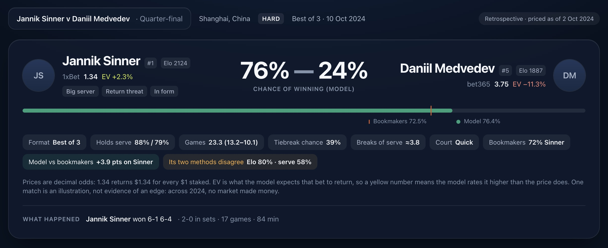
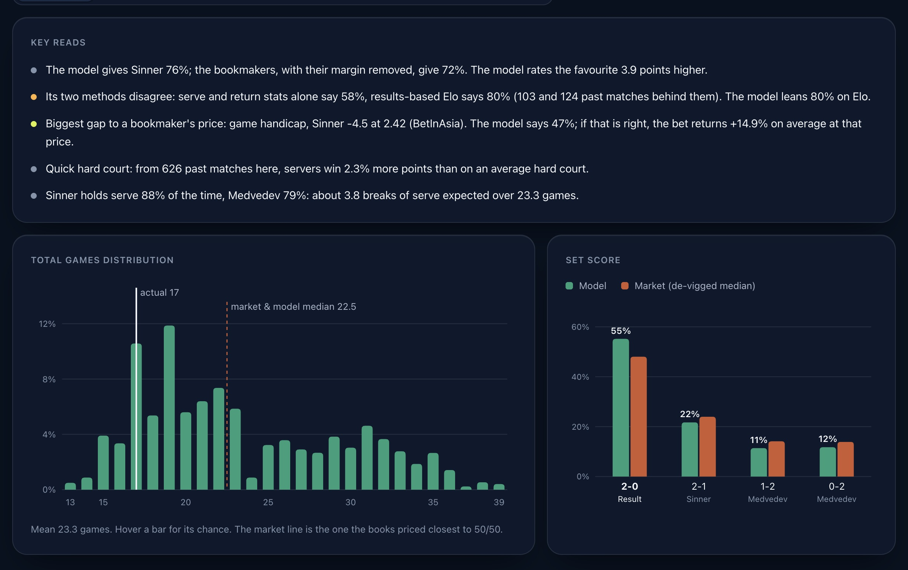
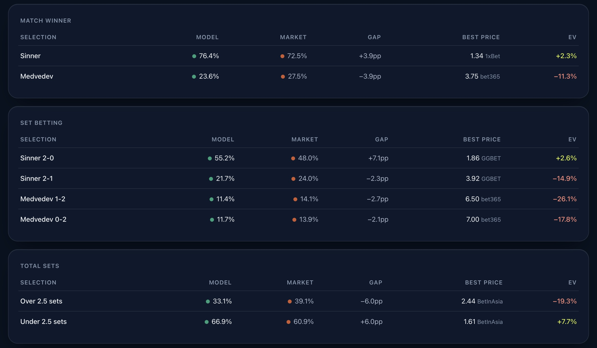
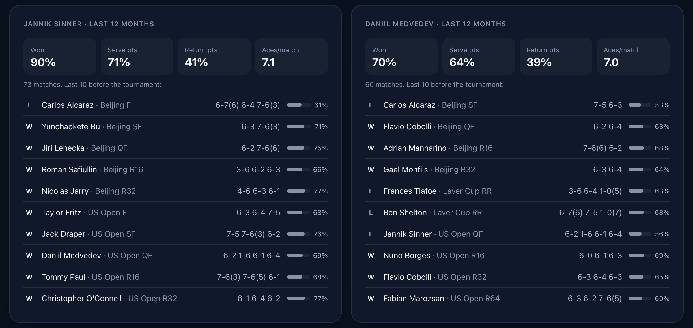
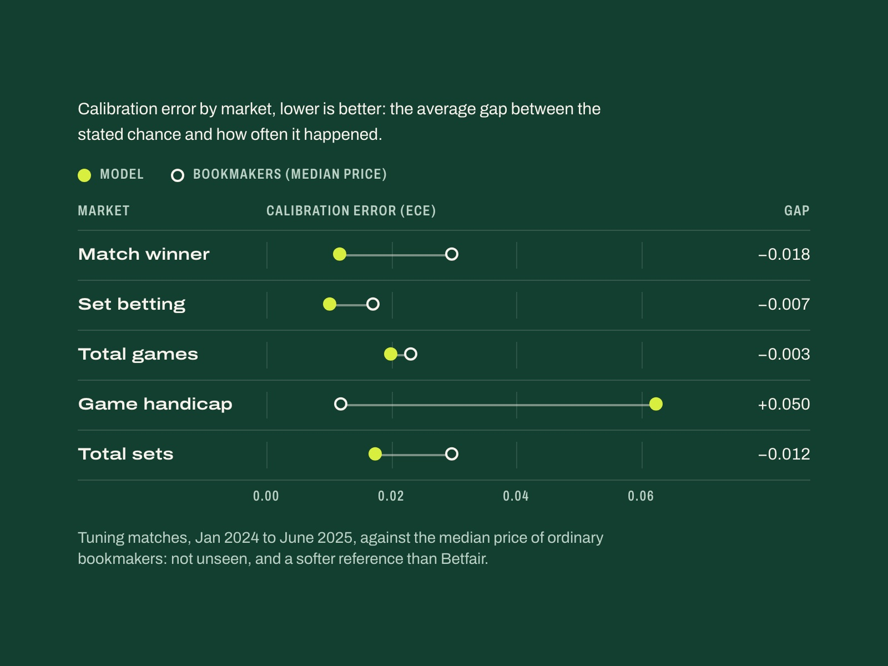
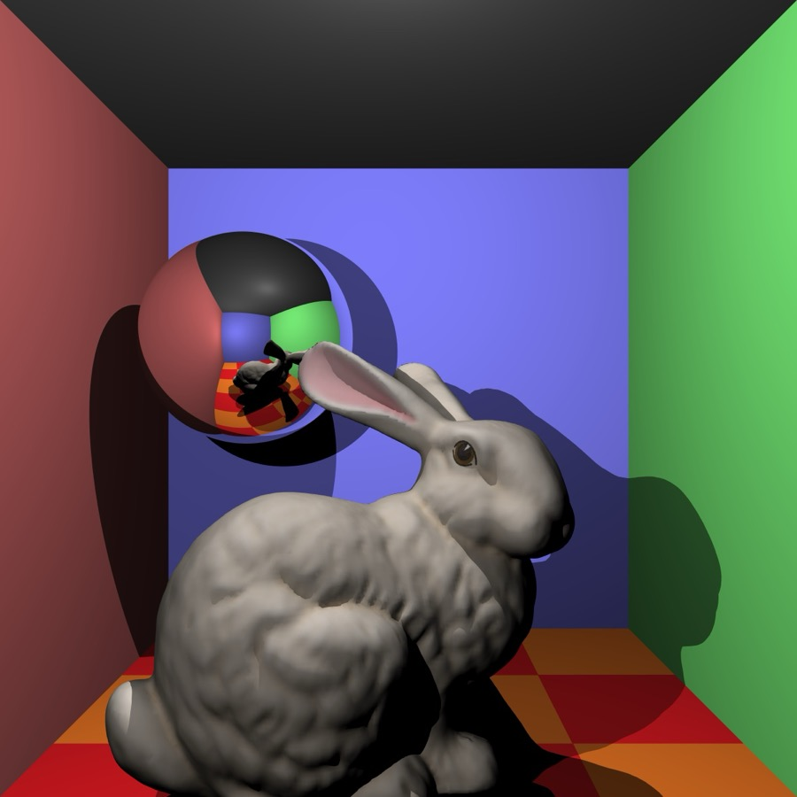
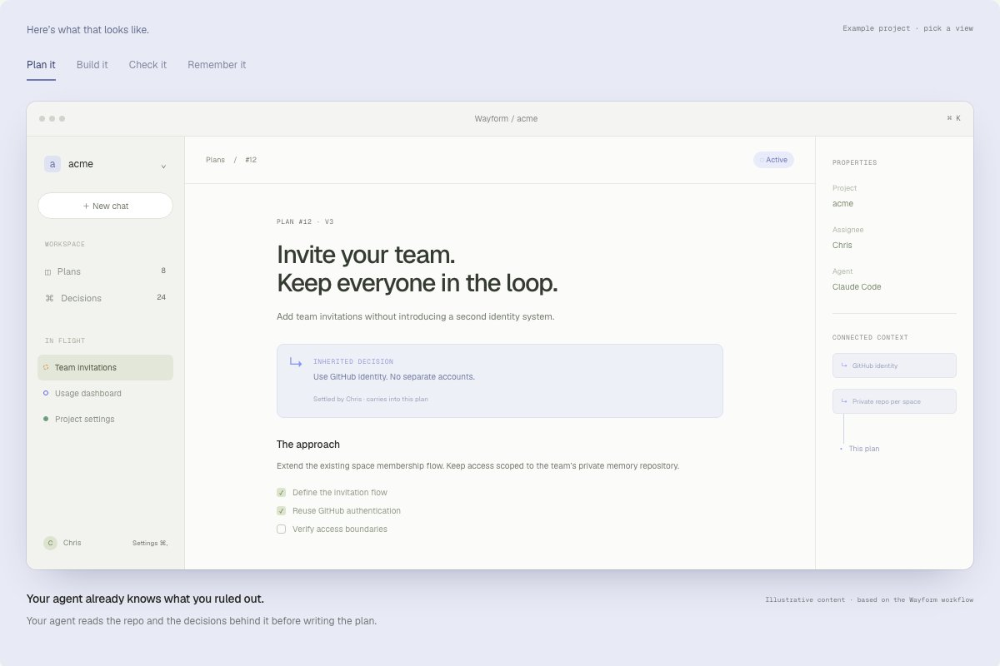

Project 02Mobile


As a big tennis fan, I wanted to build something that could predict future matches. This project has helped me learn more about probability and machine learning, and I'm still improving the model.





 Python
Python Pandas
Pandas Scikit-Learn
Scikit-Learn Historical ATP match data
Historical ATP match dataProject 01Machine learning
Good data matters. A strong model with poor data can lose to a simpler model with reliable data. I'm still tuning this one to make its predictions better.
Project 02Mobile
Project 03Graphics

Project 04Developer tools
